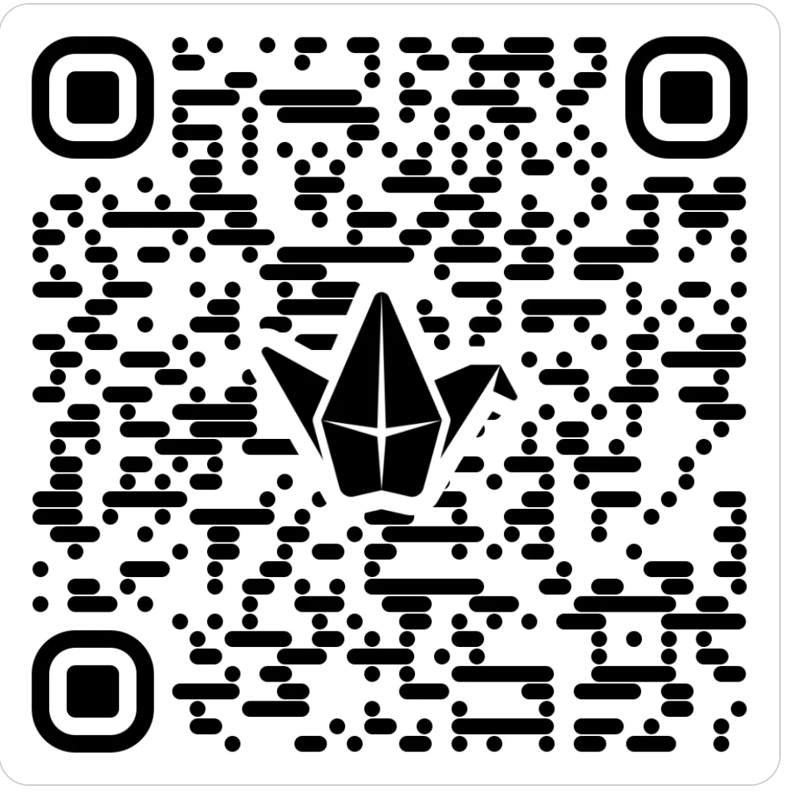

Retos individuales
Diseño de Infografía sobre IA y Emprendimiento
Objetivo de la Actividad: Fomentar la comprensión y la reflexión sobre la inteligencia artificial y su aplicación en el emprendimiento a través de la creación de una infografía educativa que resuma los conceptos clave, beneficios, desafíos y consejos prácticos para su implementación en pequeñas y medianas empresas (PYMEs).
Descripción de la Actividad: Cada estudiante creará una infografía que ilustre de manera clara y concisa cómo la inteligencia artificial puede ser aplicada en el ámbito del emprendimiento, basándose en su aprendizaje teórico y práctico. Esta infografía deberá incluir ejemplos específicos, tips para la implementación y reflexiones personales sobre el uso de la IA.
Pasos de la Actividad:
Investigación:
Investigar sobre los fundamentos de la inteligencia artificial y su relevancia para los emprendedores.
Identificar casos de éxito y estudios de caso donde la IA ha sido beneficioso para las PYMEs.
Diseño del Contenido:
Seleccionar los puntos clave que se quieren destacar:Definición de IA: Explicar qué es la inteligencia artificial de manera simple.
Aplicaciones en Emprendimiento: Describir cómo la IA puede optimizar procesos, mejorar la toma de decisiones y aumentar la eficiencia.
Beneficios de la IA: Enumerar los beneficios tangibles como la reducción de costos, la mejora del servicio al cliente, etc.
Desafíos y Consideraciones: Abordar los posibles desafíos y cómo superarlos.
Tips y Mejores Prácticas: Ofrecer consejos para integrar la IA en los negocios pequeños y medianos.
Reflexión Personal: Incluir una sección donde el estudiante refleje sobre cómo la IA podría impactar su propio emprendimiento o área de interés.
Creación de la Infografía:
Utilizar herramientas digitales como Canva, Adobe Spark o Piktochart para diseñar la infografía.
Integrar gráficos, imágenes y diagramas que hagan la información más accesible y atractiva.
Presentación y Discusión:
Presentar la infografía en clase o subirla a la plataforma del curso para compartir con compañeros.
Discutir cómo cada uno ha interpretado la aplicación de la IA en el emprendimiento y aprender de las diferentes perspectivas.
Evaluación:
La infografía será evaluada según la claridad, creatividad, profundidad del contenido, y precisión en la representación de la información sobre IA.
Se valorará también la originalidad en la presentación y la capacidad de sintetizar y comunicar ideas complejas de manera efectiva.
Rúbrica diseño infografía
| Excelente (9-10 puntos) | Bueno (7-8 puntos) | Aceptable (5-6 puntos) | Insuficiente (0-4 puntos) | |
|---|---|---|---|---|
| Contenido y Profundidad | La infografía proporciona una excelente comprensión de la IA en emprendimiento, con ejemplos detallados y análisis profundo. (2.5) | La infografía explica bien la IA en emprendimiento, pero algunos detalles son superficiales. (1.75) | La infografía cubre conceptos básicos sin mucho detalle. (1.50) | La infografía tiene errores significativos o falta de información clave. (1.25) |
| Claridad y Organización | Descriptor (2.1) (2.5) | Descriptor (2.2) (1.75) | Descriptor (2.3) (1.50) | Descriptor (2.4) (1.25) |
| Diseño Gráfico y Estética | Descriptor (3.1) (2.5) | Descriptor (3.2) (1.75) | Descriptor (3.3) (1.50) | Descriptor (3.4) (1.25) |
| Exactitud y Rigor | Descriptor (4.1) (2.5) | Descriptor (4.2) (1.75) | Descriptor (4.3) (1.50) | Descriptor (4.4) (1.25) |
| Creatividad y Originalidad | X (X) | X (X) | X (X) | X (X) |
| Reflexión Personal | X | X (X) | X (X) | X (X) |
- Actividad
- Nombre
- Fecha
- Puntuación
- Notas
- Reiniciar
- Imprimir
- Aplicar
- Ventana nueva
Padlet de clase
Aquí teneis el código acceso al padlet:

..
Obra publicada con Licencia Creative Commons Reconocimiento Compartir igual 4.0